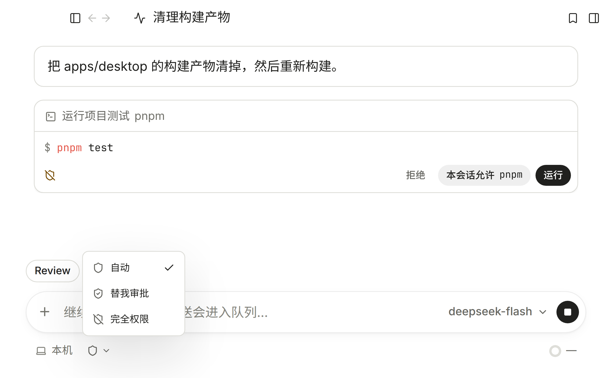

每一个问题，都有它的空间。今天它在本地项目里读代码、调工具、交付可审阅的改动；接下来，会在不同场景里长成专业的 Actor。
按需读取文件、搜索代码，先弄清项目再动手。
改动直接写进文件，逐个检查差异再决定保留。
让 Agent 在当前项目里运行命令、构建与测试。
决定哪些操作直接执行，哪些先问你。
把常用的工作方法装进 Skill，带进下一项任务。
把独立的检索拆给子 Agent，主会话保留全貌。
连接自己的服务商，按任务选模型与思考强度。
需要浏览器的任务，打开网页、点击与截图。
已上线审批策略
会改变环境的操作先停下来等你确认，放行到什么程度由你定。
